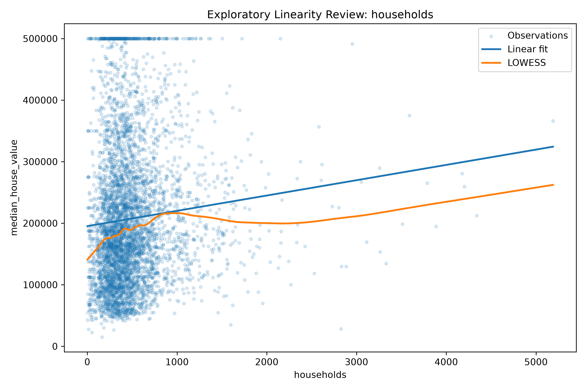
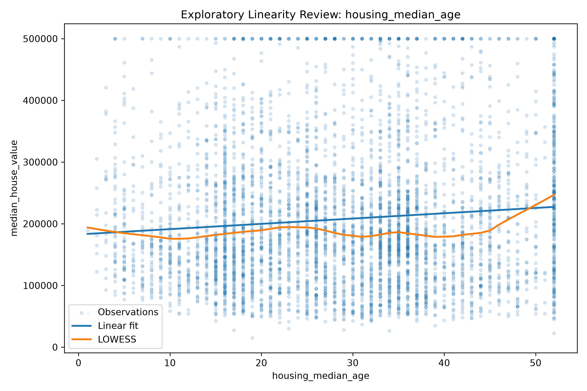
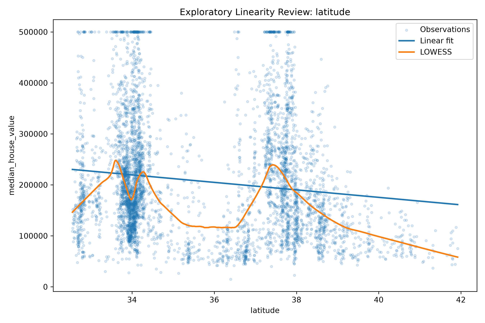
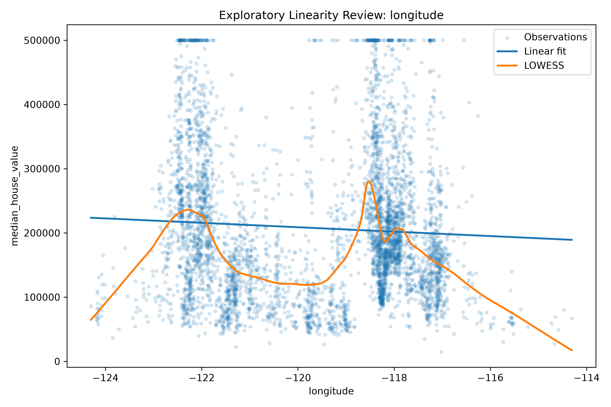
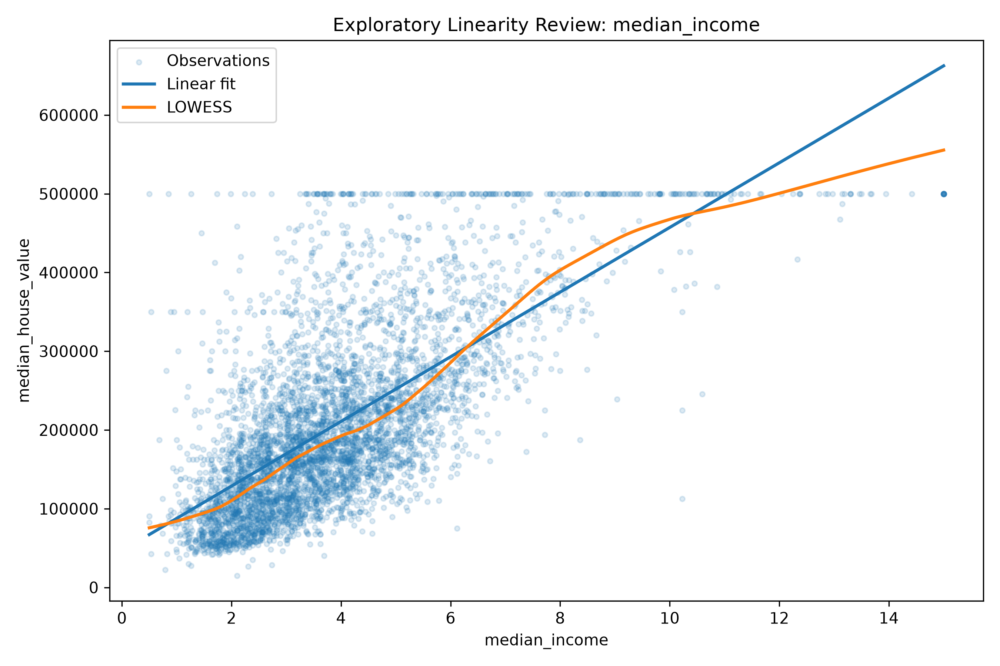
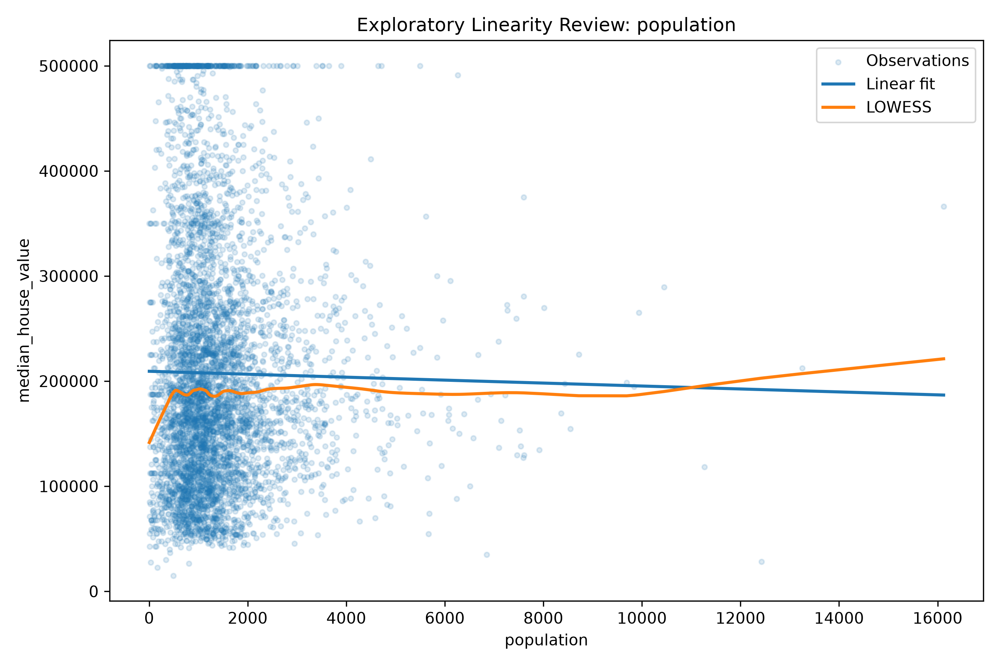
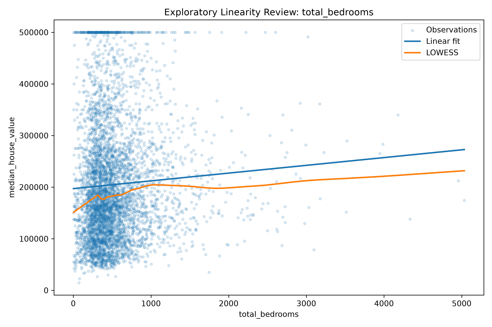
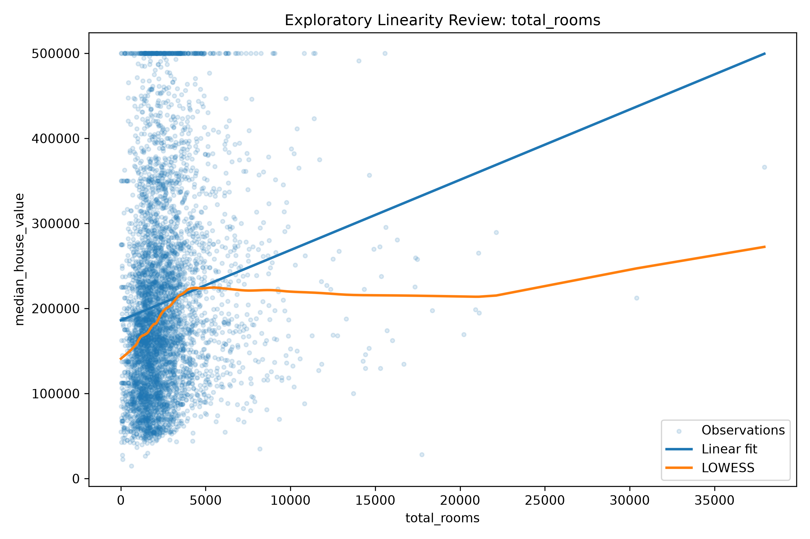

EDA Analytical Notebook
This domain-neutral notebook converts exploratory findings into candidate variable guidance, relationship assessment, business interpretation, feature ideas, modelling challenges, and the recommended analytical path.
Purpose of EDA
🟢 Candidate Explanatory Variables
This first table answers why each variable should be considered. Correlation and LOWESS evidence are reported in later sections rather than being used as the organising principle for candidate selection.
| feature | semantic_type | business_rationale | expected_relationship | candidate_status |
|---|---|---|---|---|
| longitude | spatial_coordinate | Geographic position may capture regional market structure and nonlinear spatial effects. | Expected regional and nonlinear spatial variation. | RETAIN AS CANDIDATE |
| latitude | spatial_coordinate | Geographic position may capture regional market structure and nonlinear spatial effects. | Expected regional and nonlinear spatial variation. | RETAIN AS CANDIDATE |
| housing_median_age | discrete_numeric | The variable may have a nonlinear or piecewise relationship with house value. | Possible nonlinear or threshold effect. | RETAIN AS CANDIDATE |
| total_rooms | count | The variable may contribute through scale, density, ratio, or interaction effects. | Ambiguous raw-scale effect; ratios may be more informative. | RETAIN AS CANDIDATE |
| total_bedrooms | count | The variable may contribute through scale, density, ratio, or interaction effects. | Ambiguous raw-scale effect; ratios may be more informative. | RETAIN AS CANDIDATE |
| population | count | The variable may contribute through scale, density, ratio, or interaction effects. | Possible density and congestion effect. | RETAIN AS CANDIDATE |
| households | count | The variable may contribute through scale, density, ratio, or interaction effects. | Possible block-size and occupancy effect. | RETAIN AS CANDIDATE |
| median_income | continuous_numeric | The variable remains conceptually relevant and should be assessed jointly with other predictors. | Expected positive association with house value. | RETAIN AS CANDIDATE |
| ocean_proximity | nominal_categorical | Systematic differences between categories may explain house-price variation. | Expected systematic differences across categories. | RETAIN AS CANDIDATE |
🔵 Multicollinearity Screening
High pairwise association signals possible redundancy for inferential coefficient estimation. It is not an automatic removal rule and may be acceptable in predictive models when validation performance benefits.
| feature_1 | feature_2 | correlation | absolute_correlation | eda_interpretation | machine_learning_implication | inferential_implication |
|---|---|---|---|---|---|---|
| longitude | latitude | -0.924673 | 0.924673 | High pairwise association | Retain initially. Predictive models may use both variables if validation performance benefits. | Do not remove at EDA stage. Assess VIF, condition number, estimability, and theory before coefficient interpretation. |
| total_rooms | total_bedrooms | 0.929288 | 0.929288 | High pairwise association | Retain initially. Predictive models may use both variables if validation performance benefits. | Do not remove at EDA stage. Assess VIF, condition number, estimability, and theory before coefficient interpretation. |
| total_rooms | population | 0.853244 | 0.853244 | High pairwise association | Retain initially. Predictive models may use both variables if validation performance benefits. | Do not remove at EDA stage. Assess VIF, condition number, estimability, and theory before coefficient interpretation. |
| total_rooms | households | 0.917442 | 0.917442 | High pairwise association | Retain initially. Predictive models may use both variables if validation performance benefits. | Do not remove at EDA stage. Assess VIF, condition number, estimability, and theory before coefficient interpretation. |
| total_bedrooms | population | 0.873909 | 0.873909 | High pairwise association | Retain initially. Predictive models may use both variables if validation performance benefits. | Do not remove at EDA stage. Assess VIF, condition number, estimability, and theory before coefficient interpretation. |
| total_bedrooms | households | 0.979684 | 0.979684 | High pairwise association | Retain initially. Predictive models may use both variables if validation performance benefits. | Do not remove at EDA stage. Assess VIF, condition number, estimability, and theory before coefficient interpretation. |
| population | households | 0.902632 | 0.902632 | High pairwise association | Retain initially. Predictive models may use both variables if validation performance benefits. | Do not remove at EDA stage. Assess VIF, condition number, estimability, and theory before coefficient interpretation. |
🟣 LOWESS Deviation and Analyst Review
The score ranks deviation from a linear approximation. The automated screen is not the final classification: review the figure, record the visual evidence, and confirm the decision through specification tests and validation.
| feature | lowess_deviation_score | visual_evidence | analyst_decision | provisional_model_implication | figure_file |
|---|---|---|---|---|---|
| longitude | 0.395259 | Review the corresponding LOWESS figure | Not reviewed | Do not rely only on a linear coefficient; compare nonlinear OLS and GAM specifications. | lowess_longitude.png |
| latitude | 0.359904 | Review the corresponding LOWESS figure | Not reviewed | Do not rely only on a linear coefficient; compare nonlinear OLS and GAM specifications. | lowess_latitude.png |
| total_rooms | 0.216572 | Review the corresponding LOWESS figure | Not reviewed | Evaluate nonlinear polynomial and GAM effects. | lowess_total_rooms.png |
| total_bedrooms | 0.196473 | Review the corresponding LOWESS figure | Not reviewed | Evaluate nonlinear polynomial and GAM effects. | lowess_total_bedrooms.png |
| households | 0.195267 | Review the corresponding LOWESS figure | Not reviewed | Evaluate nonlinear polynomial and GAM effects. | lowess_households.png |
| housing_median_age | 0.194547 | Review the corresponding LOWESS figure | Not reviewed | Evaluate nonlinear polynomial and GAM effects. | lowess_housing_median_age.png |
| population | 0.181776 | Review the corresponding LOWESS figure | Not reviewed | Evaluate nonlinear polynomial and GAM effects. | lowess_population.png |
| median_income | 0.164552 | Review the corresponding LOWESS figure | Not reviewed | Evaluate nonlinear polynomial and GAM effects. | lowess_median_income.png |
🔵 Feature Engineering
Automatically Generated Variables
These ratios have direct business meaning and may be generated consistently across training, validation, test, and future data.
| recommended_feature | formula | business_meaning | recommendation_type | implementation_rule | caution |
|---|---|---|---|---|---|
| rooms_per_household | total_rooms / households | Average housing-space availability per household. | DETERMINISTIC RATIO | Create automatically | Protect against zero denominators and fit all model-dependent transformations on training data only. |
| bedrooms_per_room | total_bedrooms / total_rooms | Internal composition of the housing stock. | DETERMINISTIC RATIO | Create automatically | Protect against zero denominators and fit all model-dependent transformations on training data only. |
| population_per_household | population / households | Average household occupancy. | DETERMINISTIC RATIO | Create automatically | Protect against zero denominators and fit all model-dependent transformations on training data only. |
| bedrooms_per_household | total_bedrooms / households | Bedroom availability per household. | DETERMINISTIC RATIO | Create automatically | Protect against zero denominators and fit all model-dependent transformations on training data only. |
| rooms_per_person | total_rooms / population | Housing-space availability per person. | DETERMINISTIC RATIO | Create automatically | Protect against zero denominators and fit all model-dependent transformations on training data only. |
| bedrooms_per_person | total_bedrooms / population | Bedroom availability per person. | DETERMINISTIC RATIO | Create automatically | Protect against zero denominators and fit all model-dependent transformations on training data only. |
Exploratory Interaction Hypotheses
These are hypotheses rather than mandatory transformations. Retain them only when they have conceptual justification and add validated value.
| recommended_feature | formula | business_meaning | recommendation_type | implementation_rule | caution |
|---|---|---|---|---|---|
| longitude_latitude_interaction | longitude × latitude | Exploratory interaction representing joint location. | EXPLORATORY INTERACTION | Evaluate as a candidate, not as a mandatory feature | Protect against zero denominators and fit all model-dependent transformations on training data only. |
| income_ocean_proximity_interaction | median_income × ocean_proximity indicators | Tests whether income effects differ by coastal category. | EXPLORATORY INTERACTION | Evaluate as a candidate, not as a mandatory feature | Protect against zero denominators and fit all model-dependent transformations on training data only. |
🟠 Business Interpretation
Each interpretation follows the same sequence: observed pattern, possible explanation, business implication, and inferential caution.
| feature_or_pattern | observed_pattern | possible_explanation | business_implication | inferential_caution |
|---|---|---|---|---|
| median_income | Correlation with the response = 0.6879. | The variable may capture purchasing power, local demand, neighbourhood quality, access to services, amenities, and employment opportunities. | Useful for segmentation, pricing, location assessment, affordability analysis, and scenario design. | The relationship is associative and may overlap with location and omitted neighbourhood characteristics. |
| latitude and longitude | Weak marginal linear associations, strong joint association, and visually curved response patterns. | The outcome may vary across regional markets rather than following one uniform geographic gradient. | Supports regional segmentation, territory planning, location strategy, and geographically differentiated decision rules. | Separate linear coefficients may not adequately capture spatial structure or local dependence. |
| ocean_proximity | Highest mean response category: ISLAND; lowest: INLAND. | The categories may capture amenity value, scarcity, accessibility, and geographic market segmentation. | Useful for differentiated valuation, pricing bands, portfolio design, and location-based decisions. | Category differences may overlap with income, coordinates, and unmeasured neighbourhood characteristics. |
| housing stock and occupancy variables | Room, bedroom, household, and population counts are strongly associated with one another. | Raw counts partly measure the size of the observational unit. Ratios may better represent density, crowding, composition, and resource availability. | Supports occupancy analysis, capacity assessment, neighbourhood comparison, and more interpretable indicators. | VIF and estimability must be assessed before interpreting their coefficients separately. |
Variable Selection Strategy
EDA does not remove variables. Final selection occurs only after feature generation and model-specific evaluation.
Selection Logic
🟣 Potential Modelling Challenges
Challenges are grouped into data, statistical, and business or structural issues to make their implications and required actions clear.
Statistical issue
| challenge | evidence | implication |
|---|---|---|
| Response asymmetry | Response skewness = 0.9857. | Consider transformation only when it improves validation or specification adequacy. |
| High predictor association | 7 predictor pair(s) have |r| >= 0.80. | Run VIF and condition-number checks for inference; retain for ML unless validation indicates otherwise. |
| Possible nonlinear relationships | longitude, latitude, total_rooms, total_bedrooms, households, housing_median_age, population, median_income | Compare linear, nonlinear polynomial, and smooth specifications; treat the LOWESS screen as provisional. |
| Potential omitted variables | The available predictors may not fully measure local quality, accessibility, institutional conditions, or market expectations. | Avoid causal claims and document the limits of the available data when interpreting coefficients. |
| Possible interaction effects | Geographic, socioeconomic, and categorical variables may modify one another's relationships with the response. | Evaluate selected interactions as hypotheses and retain them only when theoretically meaningful and empirically supported. |
Data issue
| challenge | evidence | implication |
|---|---|---|
| Missing predictor values | Missing values remain in: total_bedrooms | Fit imputation using training data only. |
| Potential extreme observations | total_rooms, total_bedrooms, households, population, median_house_value | Retain for prediction unless domain evidence supports removal; perform sensitivity analysis for inference. |
| Measurement limitations | Several variables are aggregated summaries rather than individual-level measurements. | Interpret findings at the observational-unit level and avoid individual-level conclusions. |
Business / structural issue
| challenge | evidence | implication |
|---|---|---|
| Spatial heterogeneity | Coordinates exhibit strong joint geographic structure. | Purely linear spatial effects may be insufficient; regional segmentation or smooth spatial effects may matter. |
🔴 Recommended Analytical Workflow
The predictive and inferential branches use different quality criteria and therefore proceed through distinct but complementary paths.
Machine Learning Branch
Inferential Branch
| sequence | analytical_branch | stage | recommendation | reason |
|---|---|---|---|---|
| 1 | Both | Candidate explanatory variables | Begin with all schema-approved predictors. | EDA is a screening stage. Weak marginal correlation does not justify exclusion. |
| 2 | Both | Feature engineering | Create deterministic ratios and evaluate selected interaction hypotheses. | Ratios may separate block size from housing density and occupancy conditions. |
| 3 | Machine Learning | Training and validation | Retain the complete engineered feature set initially; train, tune, validate, freeze, and test. | Predictive contribution may arise through joint, nonlinear, and interaction effects. |
| 4 | Inferential | Linear baseline | Estimate Linear OLS and assess VIF and condition number. | 7 high-correlation predictor pair(s) were identified. |
| 5 | Inferential | Specification decision | Apply RESET. If the linear model passes, proceed to diagnostics and robust inference. | A valid linear model should be retained when specification and diagnostics are acceptable. |
| 6 | Inferential | Alternative specification | If Linear OLS fails, evaluate nonlinear polynomial OLS and then GAM. | Exploratory curvature appears in: longitude, latitude, total_rooms, total_bedrooms, households, housing_median_age, population, median_income. |
| 7 | Inferential | Model-family evaluation | Diagnose each valid family, compare models, validate, test, and then estimate the selected model on the full sample. | Model choice should reflect specification adequacy, diagnostics, interpretability, and out-of-sample evidence. |
LOWESS Figures
Use these plots to record visual evidence before accepting the automated screen. A LOWESS curve is exploratory evidence, not a formal specification test.







